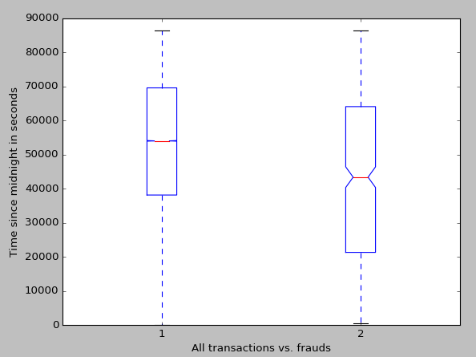
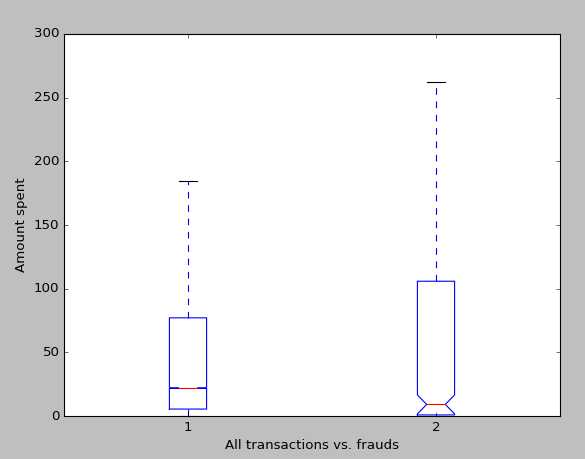
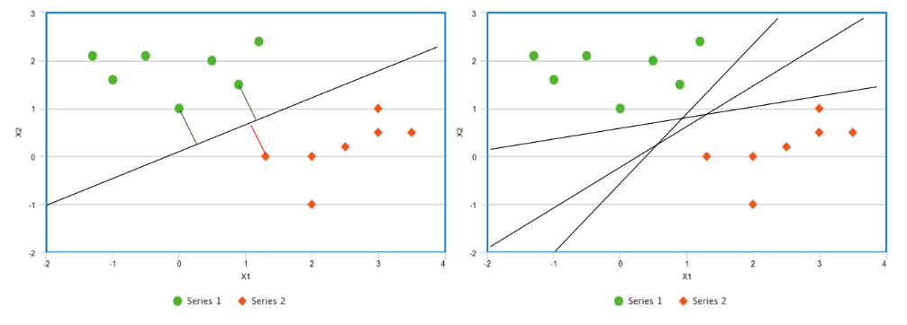
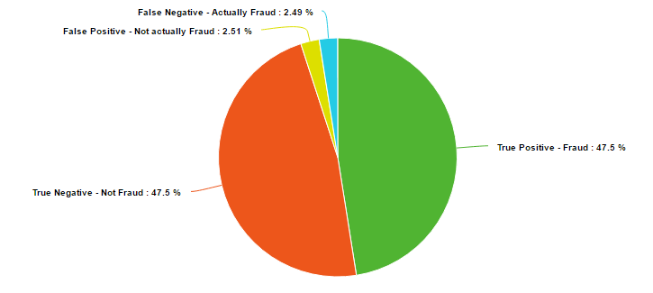

This project uses support vector machines and other data mining techniques to detect credit card fraud. It can be viewed as a formatted paper here. Code on GitHub here.
Sawyer Welden
A key challenge in data mining is tackling the problem of highly unbalanced datasets. In this paper we will look at a highly unbalanced credit card fraud dataset and how we can create an accurate method to identify fraudulent transactions. This dataset is interesting because it is extremely unbalanced, not linearly separable, and accurate results are not obtained from clustering. The end result is a classifier that is strong enough and fast enough that it could definitely be used by a credit card company.
The dataset being used consists of credit card transactions made by Europeans from two days September of 2013. The dataset contains a value ‘Time’ denoting the seconds since the last transaction, a value ‘Amount’ which is the cost of the transaction, 28 values V1,…,V28, and a value ‘Class’ which is either 0 or 1, representing non fraudulent and fraudulent charges respectively. V1,…,V28 are the results of primary component analysis on confidential data about the transactions. Due to confidentiality issues, the dataset providers cannot give the original PCA’d features or any more information at all. There are 284,807 transactions present within the data, with 492 being cases of fraud, which means fraud only accounts for 0.172% of all transactions.
In terms of preprocessing, the first step was to deal with the value ‘Time.’ Time stores the time in seconds since the last transaction. Because these transactions are not inherently related to each other, it is much more beneficial to store the time in seconds since the beginning of the first day, i.e. the sum of all the previous values stored in ‘Time.’ This value is then centered on zero and normalized. Before z-scoring our ‘Time’ a boxplot was made of it. The boxplot was made by first altering each time by modulo 86,400, which is the number of seconds in one day. The reason for this is that the data spans two days. We don’t know what days they are, so combining them into one day is desirable to show what time of day most fraudulent transactions are made during. The average time for any transaction was 2:32pm, while the average time of a fraudulent transaction was at 12:08. While this doesn’t influence how we create our classifier, it is interesting and may be helpful for a credit card company.

The next step in preprocessing was to deal with the value ‘Amount.’ When we think about credit card fraud, the amount that the thief spends is probably one of the most interesting variables, and I hypothesize one of the most indicative of fraud. Before centering the amount to zero and normalizing it, I decided to run some analysis of the prices. As one may expect, the variance in fraudulent transactions is higher than non-fraudulent transactions. We expect this because criminals know that frequent small transactions go unnoticed (hence the high density of very small purchases), while some may use a stolen credit card for a huge purchase.

The first method we will be using to create a classifier for the data is the support vector machine. The support vector machine was chosen as the first classifier to test due to being known as a good ‘out of the box’ classifier, and because it is good at binary classification. The support vector machine is an extension of the support vector classifier, which is in turn an extension of the maximal margin classifier. We will begin by explaining the maximal margin classifier.
The maximal margin classifier is probably the simplest method of binary classification there is. It is intuitive, and a good classifier in the rare case of linear separable data. The maximal margin classifier works as follows:

Figure 1
Suppose we have a two classes of data that we can separate linearly. If we can choose one line to separate the classes, we can actually choose infinitely many different lines to separate the classes. For instance, suppose we are given the points graphed in Figure 1. We could choose the line given in the left plot as our classifier, but we could also chose any of the lines given in the right plot, or infinitely many others. The difference is that the line in the left plot has the largest distance between it and any of the points. That is, we can find the perpendicular distance between a point and any line. The line which makes this distance the largest is the maximal margin classifier, and the distance itself is the margin. We can also refer to the vectors from the line to the closest points as the support vectors.
It is important to note that the maximal margin classifier is not confined to two dimensions, which is why we call the supporting distances vectors. Rather than thinking of the classifying boundary as a line we should think of it as a hyperplane. In a p-dimensional space, a hyperplane is a flat subspace defined in p-1 dimensions. In one dimension a hyperplane is a point, in two dimensions it is a line, in three dimensions it is a plane, etc. Let us look at this symbolically, in a 2-dimensionsal space a hyperplane is defined by
$latex \beta_0 + \beta_1X_1 + \beta_1X_2 = 0 &s=3 &bg=FFFFFF$
where any point X = (X1,X2) for which the equations satisfies is on the hyperplane. This equation can easily be generalized to
$latex \beta_0 + \beta_1X_1 + \beta_2X_2 + \ldots + \beta_pX_p = 0 &s=3 &bg=FFFFFF$
to define a hyperplane in a p-dimensional space. To determine how the classifier classifies a point X = (X1,…,Xp), all we must do is solve for the left side of the equation and determine whether it is greater than or less than zero. We can also determine how certain we are about a classification based on the magnitude of the left side of the equation. That is, if the result of the left side of the equation is far from zero, be it negative or positive, we can say we are confident about that classification, and if the result is close to zero, we are less confident about that classification.
Now we come to the issue that our data set is not necessarily separable by a hyperplane, and even if our data set is separable by a hyperplane, it may not be desirable to be constrained to a hyperplane because hyperplanes can be heavily skewed by one or two points, which points to overfitting. To counter the later issue, we can introduce the support vector classifier, which may misclassify a few points, but is more desirable due to its resistance to be skewed by a small number of points, which in turn means greater accuracy in classifying most of the training data. It is important to note that the support vector classifier and the support vector machine are not the same, rather the support vector classifier is the simplest implementation of a support vector machine, which will be expanded upon later. The support vector classifier is like the maximal margin classifier with the exception that the support vector classifier has a soft margin, meaning it may build itself such that some small subset of the training data is within the margin or even on the incorrect side of the hyperplane all together.
One way that we can control the likelihood of our support vector classifier to allow a training observation to violate the margin or the hyperplane is with the tuning parameter C and by defining the classifier by maximizing M on
$latex \beta_0+\beta_1X_{i1}+\beta_2X_{i2}+\ldots+\beta_pX_{ip}\geqslant M (1-\varepsilon i) &s=3 &bg=FFFFFF$
$latex \varepsilon_1\dotsc\varepsilon_n &s=3 &bg=FFFFFF$
$latex \varepsilon_i \geqslant0 \wedge \sum_{i=1}^{n}\varepsilon_i \leqslant C_n &s=3 &bg=FFFFFF$
Here we are using ε in the range i to n to let observations be on the wrong side of the margin or hyperplane, so percentage of occurrences of this is within our tuning variable. Similarly to the maximal margin classifier, we can classify test data based on the sign of the left hand side of the equation. Additionally, we can use εi to determine the classification of the i th observation of the training data. If εi is zero, it is on the correct side of the margin, if it is greater than zero, it has violated the margin, and if it is less than zero, it is located on the incorrect side of the hyperplane. It may be useful to note that setting C to zero is essentially just creating a maximal margin classifier and that it is also useful as a controlling the size of the margin. That is, the larger C, the larger the margin, because it will allow fewer violations of the margin. The tuning variable C persists when we progress to support vector machines, and we choose a lenient C for our data because we do not any fraudulent cases to go unclassified.
To address the problem of the support vector classifier only being applicable to linear separable data, we must find a way to alter our feature space without leading to hugely complex computations. Because of their efficiency we use something called a kernel, which works because of math magic. The specific kernel we are using is called the radial basis kernel, which we wouldn’t be able to use without a kernel because the corresponding feature vector is actually infinite dimensional. The radial basis function support vector machine uses the kernel
$latex K(x,x')=exp (\frac{|(x-x')|^2}{2\sigma^2}) &s=3 &bg=FFFFFF$
and takes the form
$latex K(x_i,x_i') = exp ( -\gamma \sum_{j=1}^{p} (x_{ij}-x_{ij}')^2 ) &s=3 &bg=FFFFFF$
$latex -\gamma=\frac{1}{2\sigma^2} &s=3 &bg=FFFFFF$
where 𝜎 is a positive constant. Instead of trying to compute a feature space of infinite dimension we now only have to compute K(xi,xi') for all n choose 2 pairs of i and i'. As we can see, the kernel trick is very helpful.
After preprocessing, we are prepared to make our classifier. Because the data is highly unbalanced, we have to correct for this. To maintain a decent runtime (under a day) we choose to reduce our data matrix to less than 20,000 rows. We extract all the fraudulent cases, add them in ten times, extract 4,920 random non-fraudulent cases, and add those. We use 4,920 because there are 492 frauds and we want the fraudulent and non-fraudulent cases to have equal representation.
After shuffling this data matrix we create a new radial basis support vector machine with tuning variable C=1.0. We cross validate our data over 10 k-folds. Although using more data and using more folds would be nice, the above methodology took nearly 10 hours, and the given methodology should ensure rigid testing itself.
The results of the classifier are surprisingly solid. The average of the 10 cross validation scorings was an accuracy of 95% with the errors evenly split between false negatives. The average was extremely consistent, with a range in accuracy of only 0.18%.

The radial basis function support vector machine proved itself as a very valid method for classifying binary data. 95% of fraud cases were caught with this model, which is definitely enough to deter criminals. Also importantly, only 5% of non-fraudulent charges were classified as fraudulent. Further analysis of the results actually shows that most of the false positives, the legal charges that were classified as fraud, were well above the average transaction price. Most of the population knows to notify their credit card company before making a very large purchase, and this data points to a possible reason why.
Future work would include comparing this method to other possibly viable methods. Some clustering algorithms were testing in the preparation of this paper, but struggles to keep up as data size increased, or had strange problems displaying.
James, Gareth, Daniela Witten, Trevor Hastie, and Robert Tibshirani. An Introduction to Statistical Learning: With Applications in R. New York: Springer, 2013.
Scholkopf, B., Sung, K. K., Burges, C. J., Girosi, F., Niyogi, P., Poggio, T., & Vapnik, V. (1997). Comparing support vector machines with Gaussian kernels to radial basis function classifiers. 45(11), 2758-2765.